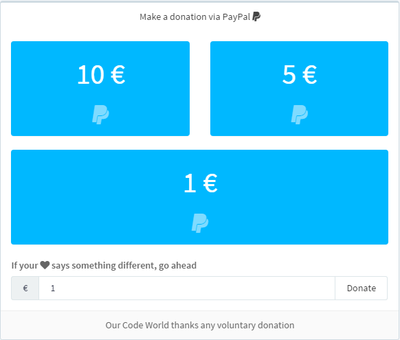

Recognized text
Here will appear the recognized text when you talk.

Buy me a coffe, visit ourcodeworld.com and read some interesting stuff about programming.
Details
JARVIS listen forever
Just say commands, this demo uses artyom in continuous mode (https connection)Commands
Please refer all the available commands of jarvis in the tab commands in the top of the website.This demo uses a execution keyword
The execution keyword for jarvis is : now, that means for example if you say : jarvis play music, the music will start but if you say jarvis stop music while the music is playing will not work until the music stops because the music is talking too ! to prevent this jarvis uses the execution keyword now. If the music is playing and you want to stop it say : Jarvis stop music now. Refer to the documentation here.Debug mode active
See everything that happens in the javascript consoleTest in a quiet place
Remember that this technology is not perfect, to play nicely with artyom.js and webkitspeechrecognition is recommendable to use in quiet places. If a command doesn't work use the execution keyword "now" : 'please do something now'. This will be helpful in noisy environments.Our Code World
A world of code, closer than you think. Read more coding articles in www.ourcodeworld.comThis demo is under development, therefore there are just a couple of commands, you can make it better ! Download artyom.js and develop your own jarvis.